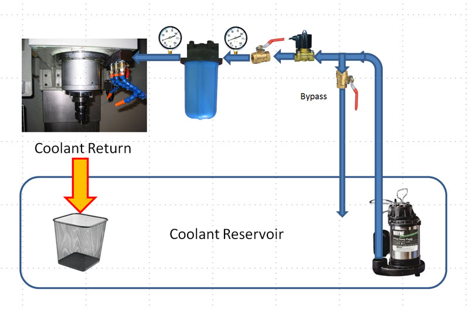

CNC Mill Flood Coolant
Does Your Mill Need Flood Coolant?
Flood coolant brings a lot of mess, but it can also enhance the performance of your mill. I wouldn't want it without a full enclosure to keep the mess inside the machine, but given an enclosure, there are a lot of advantages to flood coolant. If you're not looking for the ultimate in performance, however, you can get by just fine with a mist system.
Introduction and Preliminary Research
Having put together a coolant enclosure for the mill, it's time to start putting together a flood coolant system for it. The primary concerns in designing the system include:
- Make it low maintenance with thoughts about capturing tramp oil and filtering any stray chips before the go into the plumbing.
- Make it as high volume and pressure as possible. Towards that end, I'll be using a 3/4 HP pump, which is pretty potent for a small mill.
- Make it easy to clean up the chips. The coolant system is my chip cleanup and evacuator short of getting in the enclosure with a shovel.
Here is a schematic of the overall system:

Coolant is grabbed by the 3/4 HP sump pump and goes to a tee between the bypass line and the electric solenoid valve. The solenoid lets me control coolant via g-code. The bypass lets me regulate coolant pressure and flow by simply bypassing some back to the reservoir if there's too much. This makes the pump's life a lot easier than just shutting down the flow from the pump and creating a lot of back pressure. We can regulate the amount of bypass using the two hand valves.
There is a cannister filter with a 20 micron element to capture fines and chips before they go back into the coolant plumbing. Just use a whole house water filter from the local hardware store, they're cheap. The two pressure gages make it easy to tell when the filter element should be changed. The difference in the pressure readings tells when the filter is not passing through as much coolant as it should. I will move the solenoid valve downstream of the filter so it is also protected.
Coolant goes to a manifold on the spindle that has three line loc lines with nozzles and individual valves for each. That will let me create a wall of coolant to push chips aside.
Coolant return comes from the coolant tray and drops through a hole into a 5 gallon bucket that sits in the coolant reservoir below the hole. The bucket sits on a plastic foot stool so the chips inside will drain. Between the bucket and the foot stool is an EZ-Strainer disposable 400 micro filter to keep the worst of the chips from getting into the coolant tank. Cleaning out the chips is simplicity--just pick up the bucket and dump it.
I plan to put the reservoir on a furniture dolly so I can pull it out for easy maintenance.
Here is a list of the components and their costs:
| Economy Black 5 Gallon Bucket |
4.16 |
Bottom Diameter: 9.774" |
| Rubbermaid Step Stool |
10.79 |
|
| 20 gal Rubbermaid Brute Tote w/ Lid |
34.5 |
27 7/8 x 17 3/8 x 15 1/16 |
| EZ-Strainer, 400 Micron |
4.31 |
|
|
53.76 |
|
A 20 gallon coolant container should be plenty considering a Haas TM-1 uses 5 gallons. I probably won't fill it up to the top.
Pumps
If you go sniffing around the web, there's quite a lot of information about coolant systems. One of the things you notice pretty quickly is that flood coolant seems to fall into two categories. First, the low end systems look like they're just pouring the coolant through the line loc without an awful lot of pressure. Many of the hobbyists who've hooked up pond pumps to reservoirs get this effect as do machines that lack enclosures. When I watch this kind of system in a video, I wonder if they are even as good as a decent mist system. The low pressure and flow rate of the coolant doesn't seem to clear the chips very effectively. I want something stronger for my system.
Again, the Internet makes it easy to check these things out. My IH is no full-sized VMC. It's closer to something like a toolroom mill. The Haas TM-2, for example, sports two coolant options. The stock is a 1/8HP pump. The upgrade is a 3/4 HP pump delivering 5.25 gpm @ 30 psi. Now there is a spec to aim for. I wound up purchasing a 3/4 HP submersible sump pump that has tons of flow from a surplus outfit. Very cheap way to go.
Reservoirs and Swarf Filters
The goal here is to keep enough coolant around so there is plenty, and to try to catch at least some of the chips before they get to the pump's intake. I've got a 20 gallon plastic storage container with some baffling for this purpose. As mentioned above, I'm using a whole house water filtration system from the hardware store to catch any fines (very small chips) that make it into the pump and into the system. Cheap and cheerful. Plenty of folks on Practical Machinist report they're using these without a problem (and also a thread here and here).
Why use an inline filter like this? Lots of reasons:
- You don't want the fine chips clogging up your flood coolant nozzles and plumbing.
- You don't want to be spraying chips right back into the workpiece right where you're doing the cutting. You'll be recutting chips. Worse, you might be depositing chips from a prior job's material that are much harder than the job you're currently working on.
- The Practical Machinist crowd reports that proper coolant filtration really helps your tool life. Not surprising as reducing the recutting of chips will do that.
- If your machine supports through spindle coolant (or through tool in the case of a lathe), you need to avoid clogging these fine passages.
Links:
Chiptrap: I want a tray arrangement that sits on top of the reservoir, catches most of the chips, and is easily cleaned.
CNCZone Gravity Separator: Like the gravity separation of the real fine stuff with something like the Chiptrap for the bigger stuff.
CNCZone Haas VMC Notes: "Aluminum tends to float on the coolant." Hmmm, that bears some thinking about!
Prelimary Research: Tramp Oil Management
I go through a lot of way oil with my one shot oiler. It makes the mill work a lot better and allows me to keep gibs very tight for accuracy. I'm sure I will have tramp oil issues in my coolant sump as a result.
Initially, I'll be running an aquarium-style aerator stone in the reservoir to keep the bad bacteria (anaerobic means they depend on a lack of oxygen to thrive) at bay. It agitates and aerates the water enough to keep the bacteria from getting too crazy on a low volume setup like mine.
Longer term, I want to replicate the Skimerator, which is a simple design that gets rave reviews.
Miscellaneous Goodies
Love this cheap long entension nozzle setup from Harbor Fright. Will have to see how well it works with coolant, but seems like a handy way to wash down the chips. OTOH, a garden spray nozzle may work just as well with coolant, so might save the long nozzle for air.